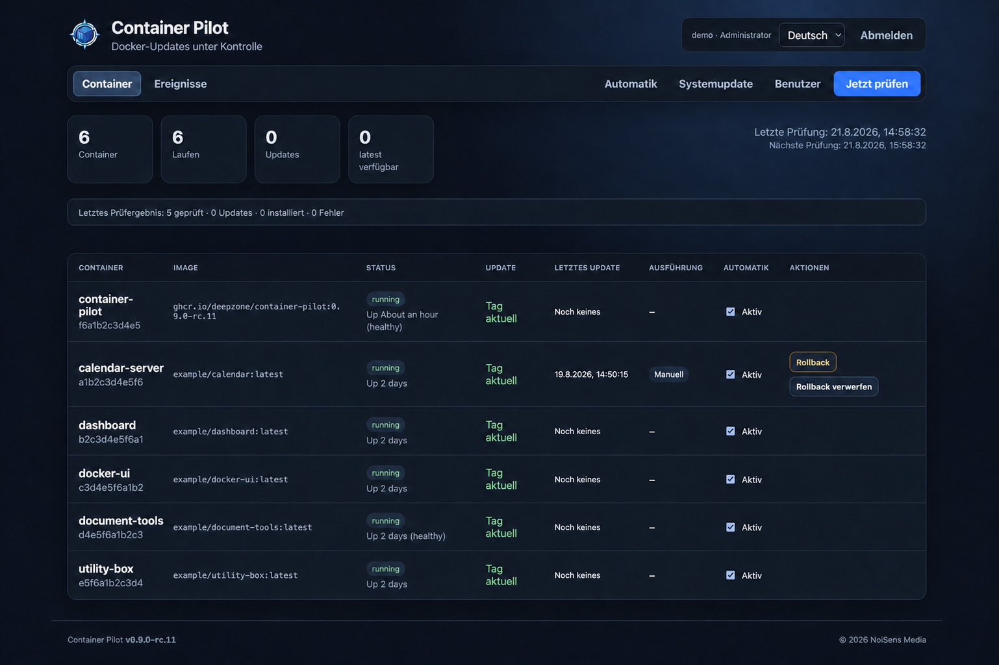

Detect
Inspect running and stopped containers and compare local image digests with public or authenticated registries.
Detect · Decide · Update · Verify · Recover
Container Pilot gives administrators a focused Web UI for discovering image updates, choosing what changes, validating replacements, and recovering safely when an update fails.
Release candidate · Linux AMD64 and ARM64 · MIT licensed

One transparent workflow
Every phase stays visible. Automatic behavior is opt-in per container, fixed tags remain fixed unless an administrator explicitly chooses otherwise, and the event history records the result.
Inspect running and stopped containers and compare local image digests with public or authenticated registries.
Use manual approval or explicit per-container policies. Fixed tags never switch to latest automatically.
Recreate containers with their runtime configuration, mounts, networks, ports, environment, and restart policy.
Wait for Docker healthchecks or a configurable startup stability window before accepting a replacement.
Restore failed updates automatically or use and dispose of retained image-level rollback points from the Web UI.
See container status, scan outcomes, last update mode, running actions, policies, and persistent event history.
Moving from Watchtower?
Container Pilot detects supported Watchtower selection labels, shows a read-only policy preview, and changes only rules explicitly confirmed by an administrator.
Optional by design
Administrators may opt in to a minimal aggregate technical report. Container and image names, network identifiers, credentials, environment values, mount paths, and application data are never included. The exact payload is visible before sending and reporting can be disabled or deleted at any time. Read the privacy details.
Security boundary
Container Pilot needs write access to /var/run/docker.sock. Run it only on a trusted management network, behind HTTPS or a VPN. An image rollback does not restore volumes, databases, or migrations, so stateful applications still require application-aware backups.
Quick start
mkdir container-pilot && cd container-pilot
mkdir -p secrets
openssl rand -base64 32 > secrets/admin_password
chmod 600 secrets/admin_password
curl -fsSLO https://raw.githubusercontent.com/DeepZone/container-pilot/main/compose.yml
docker compose pull
docker compose up -dOpen http://YOUR-DOCKER-HOST:3080, sign in as admin with the generated secret, and change the password after the first login.